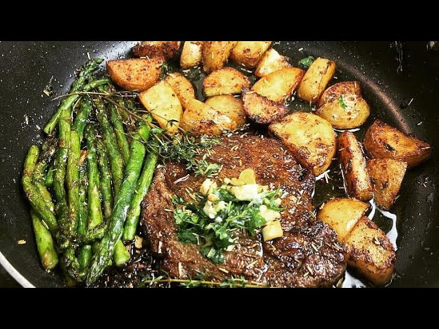

Description
This dish is one typically saved in my household for a special occasion. It does
not tend to be the kindest on your checkbook, but when completed it is well worth
the money you spend for the ingredients. It is a pan seared New York strip steak,
served with oven baked asparagus, and air fried baby golden potatoes. I have found
that learning how to make this dish properly really strengthens and builds on a lot
of the foundations and skills you learn when you're first starting out on your cooking
journey, and developing new ones that will increase your skill. Please keep in mind this is
not a beginner's dish. It is going to be tough, it is going to test your pateience, but at
the end of it all you will have grown as a cook! Enough yammering from me though. Let's get to it!
Ingredients
- 3 New York Strip Steaks
- Two Bushels of Asparagus
- 3 lbs of Baby Gold Yukon potatoes
- Salt
- Pepper
- Fresh Thyme
- Butter
- Cooking Oil
- Parmesan Cheese
- Four Cloves of Garlic (per steak)
- Onion Powder
- Garlic Powder
- Dried Oregano
- Dried Basil
- Dried Rosemary
- Cajun Seasoning (optional)
Directions
- We'll start by preheating our oven to 425 degrees Fahrenheit. This is for the asparagus
- I use an air fryer for my potatoes. My settings are 400 degrees Fahrenheit for
20 minutes, shaking the potatoes around at the 10 minutes.
- Let's also get out a pan to cook our steak in. The best kind is one big enough to fit the
steak comfortably, while leaving about an inch and a half of room on all sides. This ensures
you don't overcrowd the pan, and leave well enough room to baste the steaks later.
- Now let's prep the separate parts of the dish!
- For the asparagus you'll want to make sure you clean them and then break the ends off at
their natural points. Note: This can be done by grabbing either end of the asparagus
and bending it until it breaks on it's own